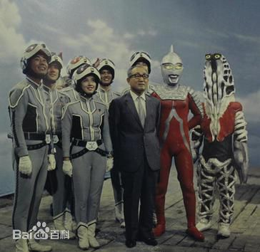
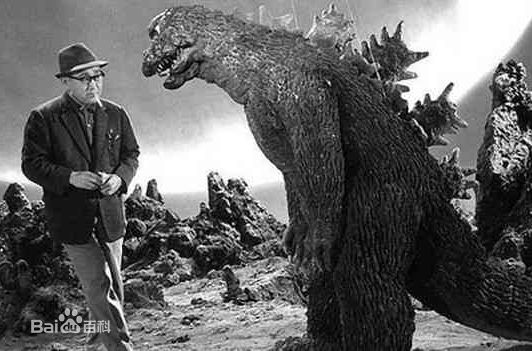
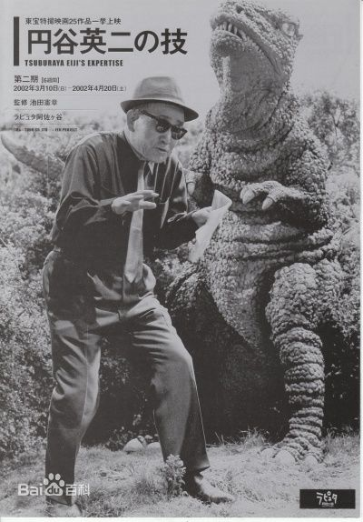

| 圆谷英二（奥特之父） |  | |||
| 圆谷英二，1901生于福岛县须贺川市，日本特摄导演、圆谷株式会社的创始人和首任社长。他以摄影师的身份进入电影界后，学会了特摄技术。他的作品之一《哥斯拉》于1954年在美国上映已取得不俗的反响，此后哥斯拉成为人类历史上最著名的怪兽。 | ||||
| 哥斯拉系列电影还成为世界上最长寿的电影系列，圆谷英二被称为“特摄之神”。1963年之前效力于东宝株式会社，曾为《日本海大海战》等电影担任特摄指导。1966年，圆谷英二拍摄了人类对抗怪兽的特摄片《奥特Q》，但是片中并没有出现巨大英雄形象。《奥特Q》在当时日本国内引起强烈反响。之后，圆谷英二又在同年拍摄了《奥特曼》，并首次出现了巨大英雄。1967年拍摄了《赛文奥特曼》。此后，奥特曼的浪潮逐渐扩大，成为了许多人心中正义的英雄。1970年，由于之前长期硬撑着身体参加工作，1月25日，圆谷英二在家中去世，享年68岁。 |  | |||
| 中文名 | 圆谷英二 |
逝世日期 | 1970年 |
 |
| 国 籍 | 日本 |
职 业 | 导演 | |
| 出生地 | 福岛县须贺川市 |
代表作品 | 奥特曼系列、奥特Q |
|
| 出生日期 | 1901年 | 主要成就 | 奥特曼之父、特摄之神 |
|
Welcome to